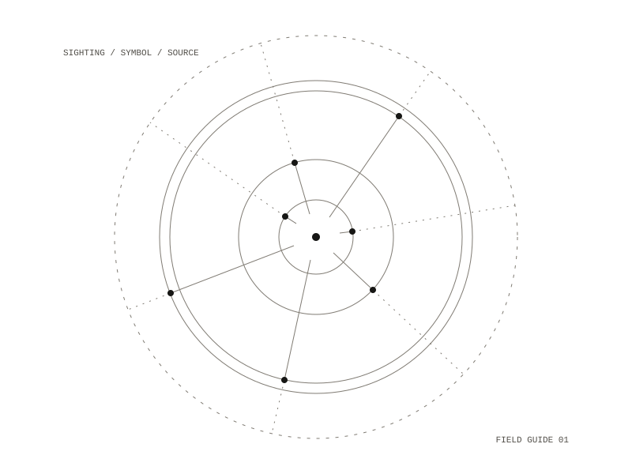

The Oracle Lab
An iPhone field guide to the symbolic life: point the camera at what caught your eye, see what the traditions say about it with their sources, and let the trail of sightings be read over time. The one job is to read the symbols a person meets as one trail, without asking them to type.

Sighting, symbol, trail
The gesture is the camera shutter. An entry can be any mix of photo, mood, voice note and text note, all optional, and mood is chosen as the weather of the self: pictures of sky states. The phone suggests a label for a photo (bird, oak, cloud, 11:11), and the person confirms it or picks their own symbol; every entry keeps both what was suggested and what was chosen. A sighting is saved before any interpretation.
The app opens on Today: the sky as an image, one of your own past sightings brought back when the moon or the season matches, and one line about today, with the cited sources one tap down. Navigation is Today, the shutter, Trail and You, and there is no catalogue: a symbol's meanings appear only inside a reading.
A first reading
The first run asks a name and a birthday, with birth time and place optional, and opens the season of birth, the sun sign and decan, and the name number.
Every meaning names its source
Every traditional meaning names its source, and copyrighted text is restated in the app's own words, never quoted. The corpus holds 257 symbols from 37 sources, with 90 cross-meaning links and 61 figures in 16 traditions. Its lineages include birds and augury, herbalism and the doctrine of signatures, trees and ogham, clouds and sky omens, stones, the wheel of the year, the 24 solar terms, the moon and lunar mansions, signs and decans, planetary days and hours, and numbers seen. The same symbol is followed across traditions, to the gods, goddesses and angels who keep it (the raven: Odin's Huginn and Muninn, Apollo, the Morrígan), each link cited. Readings are labelled as interpretation, never as fact, prediction or medical advice.
No path shown
The person never sees a path, stage, level or progress. Readings reach further as the trail grows: more traditions, older sources, links between sightings. The app never tells the person what to do.
The look
The look comes from the correspondences piece: a near-black field, an italic serif for names and quoted sources, wide-tracked mono capitals for citations, and green for what is cited. The machine's marks are thin and geometric; the person's own are thick and irregular, in red. The references are Merlin Bird ID for the one camera gesture and the life list, Aby Warburg's Mnemosyne Atlas for images related by correspondence, which becomes the trail view, and Jung's Red Book for the image first, with words beneath it.
Privacy
There is no backend, and nothing leaves the phone.
iPhone: SwiftUI
257 symbols from 37 sources, each meaning cited
field #07070b, ink #f4f4f2, meridian #34e08a, mark #e2564d